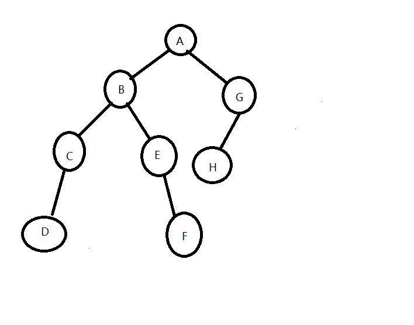

直接上代码（有注释）：
#include<cstdio>
#include<iostream>
#include<cstdlib>
#include<queue>
using namespace std;
int x=1;//节点编号
typedef struct Zl//二叉树的节点
{
char data;//数据域
struct Zl *lchild,*rchild;//指向左子树和右子树的指针
int index;//每个节点的编号
}Zl;
typedef struct Static//静态链表的结点
{
char data; //数据域
int lchild; //指向左子树的指针域
int rchild; //指向右子树的指针域
}Static;
Zl* PreOrderInitBTree()//先序建立二叉树
{
Zl *T;
char temp;
cin>>temp;//由键盘输入结点数据域的值
if(temp =='0') //若某一节点为叶子结点，则其左右子树均为NULL，0表示建空树
T=NULL;
else
{
T=new Zl;
T->data=temp;
T->index=x++;
T->lchild=PreOrderInitBTree();//递归创建其左子树
T->rchild=PreOrderInitBTree();//递归创建其右子树
}
return T; //返回根节点
}
void PreOrderTraverse(Zl *first)//先序遍历及输出二叉树
{
if(first!=NULL)
{
cout<<first->data;//先输出结点值
PreOrderTraverse(first->lchild);
PreOrderTraverse(first->rchild);
}
}
void MidOrderTraverse(Zl *first)//中序遍历并输出二叉树
{
if(first!=NULL)
{
MidOrderTraverse(first->lchild);
cout<<first->data;//先遍历完左子树再输出结点值
MidOrderTraverse(first->rchild);
}
}
void cengciTraverse(Zl *p)//层次遍历二叉树
{
queue<Zl> qe;//用队列来存放结点
qe.push(*p);
while(qe.empty()==false)//只要结点不为空就继续
{
Zl temp=qe.front();//将将要出队的结点值储存在temp中
qe.pop();
if(temp.lchild!=NULL)
qe.push(*temp.lchild);//左孩子入队
if(temp.rchild!=NULL)
qe.push(*temp.rchild);//右孩子入队，按照先左后右的顺序入队，确保出队顺序
cout<<temp.data;//输出结点值
}
}
void Scopy(Static *s,Zl *p)//将动态二叉链表转化为静态链表
{
s[p->index].data=p->data;//数据同步过来
if(p->lchild==NULL)//左孩子为空时
s[p->index].lchild=0;
else
{
s[p->index].lchild=p->lchild->index;//同步左孩子信息
Scopy(s,p->lchild);//递归同步左子树
}
if(p->rchild==NULL)//左孩子为空时
s[p->index].rchild=0;
else
{
s[p->index].rchild=p->rchild->index;//同步右孩子信息
Scopy(s,p->rchild);//递归同步右子树
}
}
void Destory(Zl *p)//删除单个结点
{
free(p);
}
void Clean(Zl *first)//整表删除
{
if(first!=NULL)
{
Clean(first->lchild);
Clean(first->rchild);
}
free(first);
}
int main()
{
Zl *first;
cout<<"请按先序顺序输入二叉树序列，0代表空"<<endl;
first=PreOrderInitBTree();
cout<<"先序输出："<<endl;
PreOrderTraverse(first);//先序遍历输出
cout<<endl;
cout<<"中序输出"<<endl;
MidOrderTraverse(first);//中序遍历输出
cout<<endl;
cout<<"层次遍历输出"<<endl;
cengciTraverse(first);//层次遍历输出
cout<<endl;
Static s[20];
Scopy(s,first);
cout<<"静态链表输出："<<endl;
for(int i=1;i<x;i++)//输出静态链表
{
cout<<"下标为:"<<i<<" 数据:"<<s[i].data<<" 左孩子下标:"<<s[i].lchild<<" 右孩子下标:"<<s[i].rchild<<endl;//依次输出结点值及左子树编号和右子树编号
}
Clean(first);
return 0;
}
这棵二叉树的逻辑结构为：

程序运行结果：

我的个人博客 amazingz6.github.io
我的bilibili https://space.bilibili.com/66908429
我的CSDN https://blog.csdn.net/qq_44105654
我的简书 https://www.jianshu.com/u/607ef08e5825
我的github https://github.com/AmazingZ6?tab=repositories